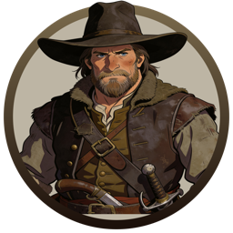

A new version is available.
Click to restart and update.
CALEB'S
HOLLOW

Wanderer
signed in
Loading…
☰
↺
Last Turn
↩
← Menu
Menu
🔊 Sound: On
Replay Last Turn
Return to Main Menu
Resign from Game
Close
Chronicle
+
🗒 Mission Log
📜 Chronicle
N
E
S
W
--
--
--
➤
◀
▶
Controls
Back
↺
Next
AutoPlay
Stop
Camera
Follow
Detail
Full
↶
↷
＋
－
↶
↷
⛶
⊙
⚙
Tile images
📋 Planning
AI Debug
◀
Action Plan
+
📋 Your Plan
◀
⏰ Time's Up!
Your planning time has expired.
Auto-submitting in
5
s…
✓ Submit Current Plan
✕ Submit Empty Plan
⚔ Hero
Witch ✦
✕ Cancel
📜 Chronicle
✕
✕
Continue
↺ Replay
Next Turn →
— click anywhere to continue —
⏳
Reconnecting…
Back to Menu
⏸
↻
⚔ Critical Battle
⚔
SPECTATING
-
-
-
Connecting...
Skip hints
Got it →